Borgonha · Encontros RENDEZVOUS
Chablis,
o Chardonnay mais célebre, por inteiro
Uma viagem pela identidade dos vinhos brancos de Chablis.
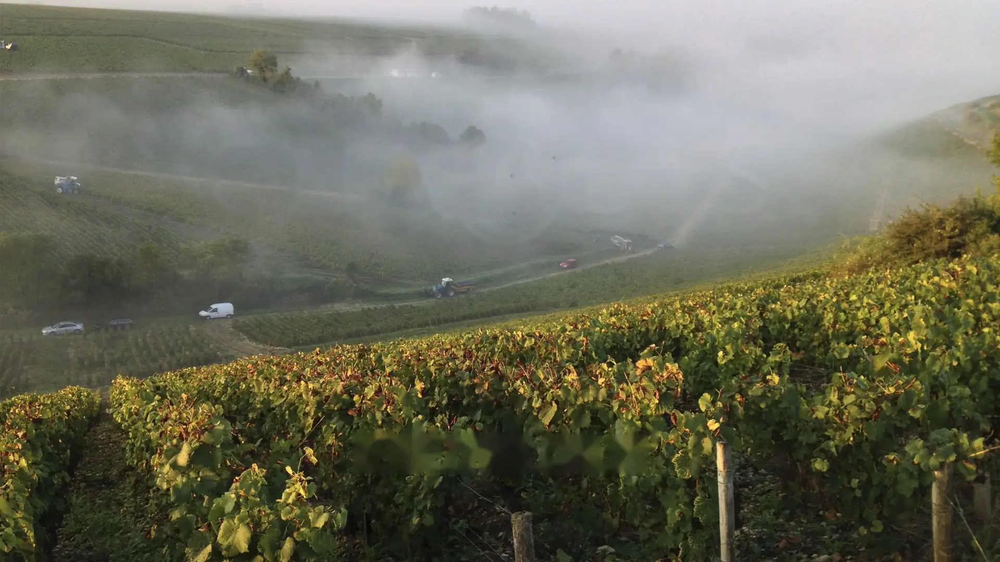
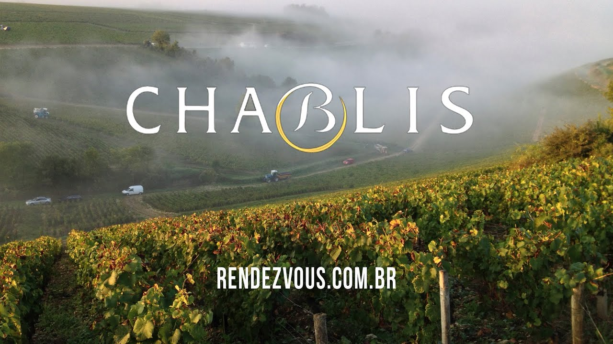
FILME · 31:51ChablisNo Instagram · @wandeldarocha
Curtas
Degustações, viagens e bastidores, publicados no Instagram @wandeldarocha.
-
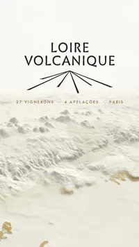
Mais recente ParisLoire Volcanique -
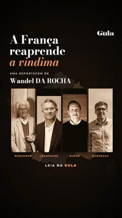
ReportagemA França reaprende a vindima -
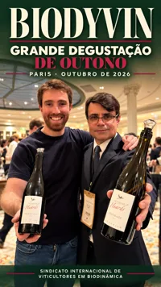
ParisUm encontro com a biodinâmica -
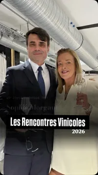
ParisRencontres Vinicoles -
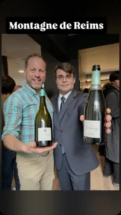
ChampagneChampagne, norte e sul -
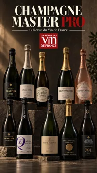
DegustaçõesMaster Pro Champagne - Ver no Instagram@wandeldarocha
Filmes e séries
Todos os filmes e séries ↗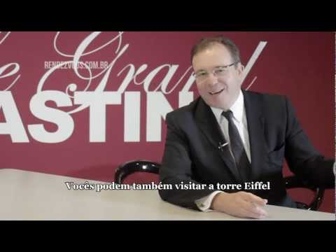
Paris · 14 episódios Le Grand Tasting Bastidores, produtores e degustações no festival de 2012.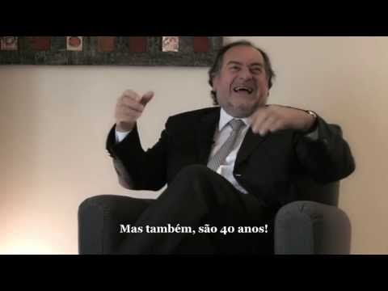
Bordeaux · 5 episódios Michel Rolland O Flying Winemaker revisita a carreira e os vinhos que a marcaram.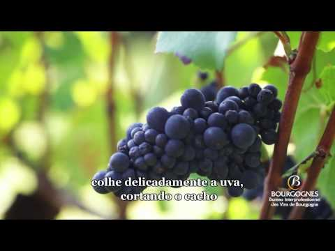
Borgonha · Filme · 2:30 A vindima na Borgonha François Labet fala da colheita no Château de La Tour.Por Wandel DA ROCHA
Grandes reportagens
Ver todas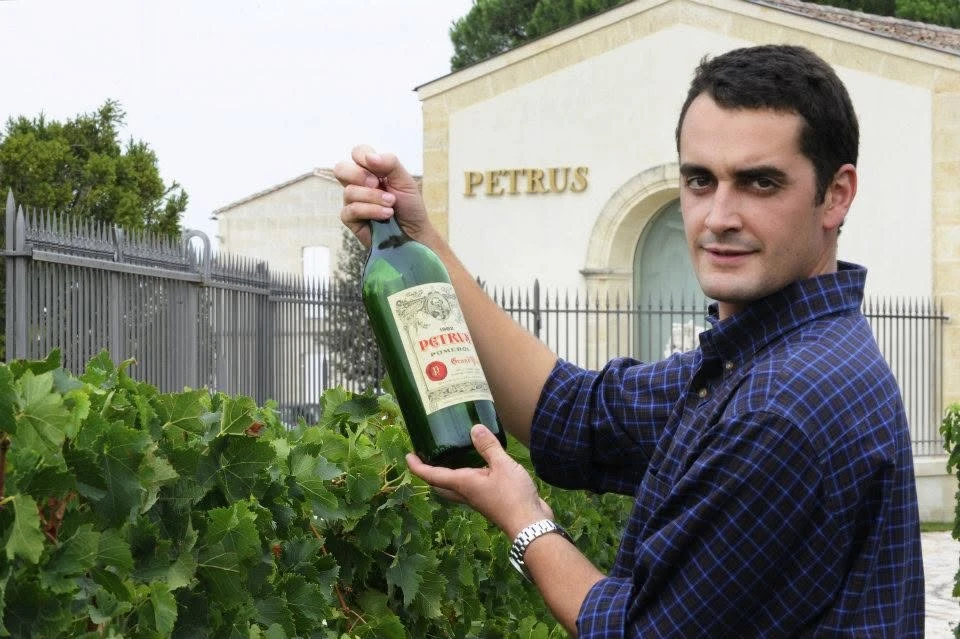
01Pomerol · BordeauxPétrus por dentro, com Olivier BERROUET
Com Olivier BERROUET e Elisabeth JAUBERT, da argila azul de Pomerol às cubas de concreto.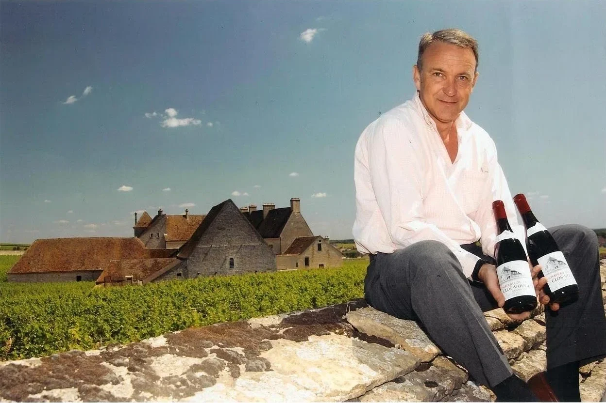
02Clos de Vougeot · BorgonhaLa Tour, a maior propriedade do Clos de Vougeot
A família de François LABET tem a maior parcela do Grand Cru e é a única a vinificar dentro dos muros. Ele cultiva sem química desde 1992 e usa cachos inteiros desde 1987.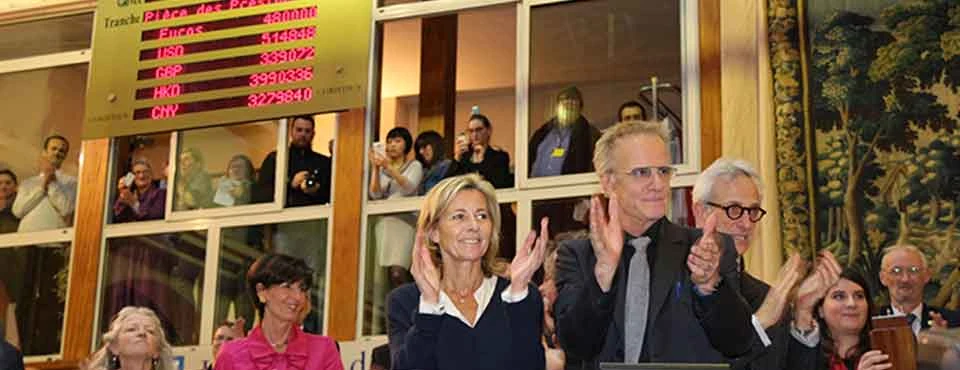
03Beaune · Borgonha Highlander em Beaune Dois dias depois dos atentados de Paris, Christophe LAMBERT apadrinhou a 155ª venda dos Hospices de Beaune. Os 228 litros de Corton Renardes saíram por 480 mil euros.